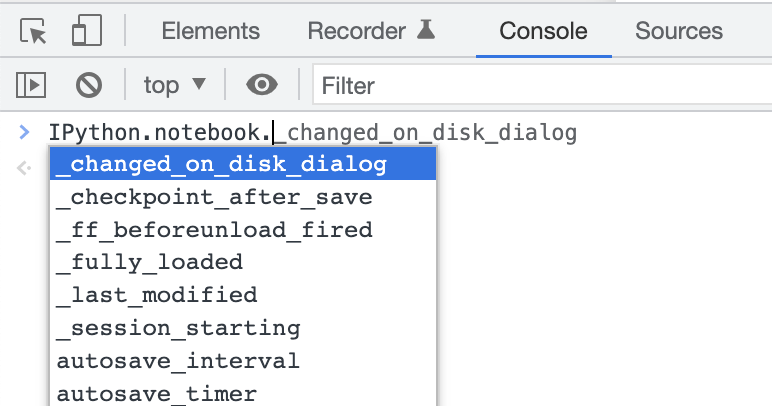

import base64
from IPython.display import Javascript
from ipywidgets import Button
def create_code_cell():
code = "print('Hello world!')"
encoded_code = base64.b64encode(code.encode()).decode()
display(Javascript(f'''
var code = IPython.notebook.insert_cell_below('code');
code.set_text(atob("{encoded_code}"));
code.execute();
'''))
create_code_cell()Create and execute cells inside a Jupyter notebook
jupyter
I’ve been thinking a lot about unique Jupyter notebook interactions. A pattern that keeps coming up in my head is to click on the output of one cell to create a new cell below it. For example, ls() could output file and directory widgets for the current directory. Clicking on a directory widget, say foo, could create a code cell below with code ls(foo), to interactively browse through files.
Update (2022-06-23)
I’ve created a working demo of point-and-click directory navigation using this pattern!.
I found this amazing gist by Fernando Perez (originally by Jonathan Frederic, see the gist for more links) which enables this pattern! It turns out that IPython makes this pretty straightforward. You directly execute JavaScript code against the IPython API that creates a code cell, sets the text of the cell (which must be base64 encoded), then executes it:
print('Hello world!')Hello world!I didn’t know that there was a neat JavaScript API inside Jupyter notebooks, but it does make sense that it exists. It’s also really useful to browse the API using your browser’s console via auto-complete on the IPython object:
